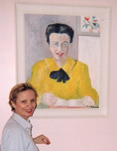
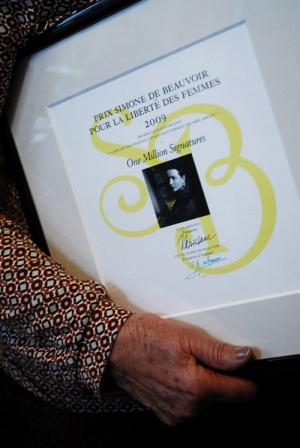
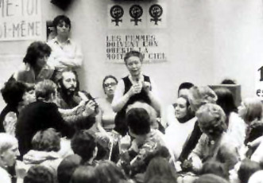

|
|

دوبووار زنی که ندای تغییر بود
سیمون دوبوار و جنبش زنان: روایت یک شاهد عینی*
کلودین مونتی- ترجمه ی هما مداح
جمعه4 بهمن 1387
 کلودین مونتی در 1949 در پاریس به دنیا آمد. مادرش، ژوسین سر، شیمیدان و پدرش ژان پیر سر، ریاضی دان بود. کلودین در جوانی به جنبش زنان فرانسه پیوست و از ابتدا رابطه ای صمیمانه با سیمون دوبوار، خواهر نقاش او، هلن دوبوار و ژان پل سارتر برقرار کرد که تا مرگ هر سه آنان ادامه داشت.
او دارای مدرک دکترا در رشتۀ "بررسی آثار و زندگی سیمون دوبوار" از دانشگاه نیس و عضو انجمن سیمون دوبوار است. از کتابهای کلودین مونتی می توان به خواهران دوبوار، سیمون دوبوار و جنبش زنان: خاطرات یک دختر شورشی و عشاق آزادی:سارتر و دوبوار اشاره کرد. مقالۀ زیر از آن جهت حائز اهمیت است که یکی از معدود روایتهای دست اول از مشارکت سیمون دوبوار در فعالیتهای عملی جنبش زنان و بازتاب دهندۀ تاثیرگذاری نظری-تئوریک و عملی او بر آغاز و باروری این جنبش در فرانسه ( و در جهان) است.
سیمون دوبوار و جنبش زنان: روایت یک شاهد عینی
من از اولین روزهای زندگی ام، فرزند جنس دوم بودم. در 1946، جنگ جهانی دوم تازه خاتمه یافته و فرانسه در حال التیام یافتن از اشغال توسط نازی ها بود، مادرم تصمیم گرفت که در شیمی کوانتوم مدرک دکترا بگیرد و استاد شیمی دانشگاه سوربن شود. اما چون در آن زمان همسر یک ریاضی دان بود، بعضی از همکاران پدرم او را نصیحت کردند که حرفه اش را کنار بگذارد و زندگی اش را وقف "مردی کند که پتانسیل تبدیل به یک دانشمند مشهور در خانواده را دارد."
او به نصایح آنان گوش نکرد و به تحصیل ادامه داد. در 1949 در ویترین کتابفروشی به کتابی برخورد که منشا جنجالهای زیادی بود. او داخل مغازه رفت و یک جلد جنس دوم خرید و در حالی که من را باردار بود، سرگرم خواندن شد. کتاب تکان دهنده بود و او دیگر تنها نبود. از آن لحظه به بعد او می دانست که احساس درستی داشته و توانست انرژی لازم برای جنگیدن و نه تنها رسیدن به استادی شیمی بلکه تبدیل به یکی از بهترین روسای زن دانشگاه در فرانسه را بدست آورد.
در ماهی که او من را به دنیا آورد، دومین بخش جنس دوم در میان بلوای سیاستمداران و نویسندگانی منتشر شد که آن را غیرقابل تحمل می دانستند. اما به خاطر این کتاب مادرم عزمی استوار پیدا کرد. او به من هم یاد دارد که پا در جای پای او بگذارم.
بیست سال بعدتر در 1969، من پشت در خانۀ شمارۀ 11 خیابان شلوستر، در نزدیکی قبرستان مونپارناس ایستاده بودم و زنگ در خانۀ سیمون دبوار را می زدم. زمانی که او در را باز کرد، اصلاً فکر نمی کردم که بارها و بارها به آن خانه بازگردم و تا آخرین روزهای زندگی او دوستش باشم.
مه 1968
بین سالهای 1949 و 1968 به ندرت در مورد حقوق زنان در جامعۀ فرانسه صحبت می شد. آژانس تنظیم خانواده تنها نهاد ترویج دهندۀ قرص پیشگیری بود. اغلب دبیرستانها مختلط نبودند و کسب مشاغل مهم برای زنان در تجارت، حقوق، مهندسی و زمینه های علمی و فنی و البته سیاست، بسیار دشوار بود. تنها شغلهایی که آنان می تونستند به کسب ان امیدوار باشند، آموزگاری، پرستاری یا منشیگری بود.
در 1968 کارگران در سرتاسر فرانسه برای حمایت از جنبش دانشجویی بر علیه استحکام اجرایی و بوروکراتیک، اعتصاب کردند. کشور تقریباً یکماه فلج شد. هر سه رهبر مهم این جنبش، مرد بودند. در آن ماه هیچ کس صدای زنی را نشنید. اما چون در آن فضا مردم بدون اینکه همدیگر را بشناسند در خیابانها با هم حرف می زدند، زنان فراسوی از این فرصت برای ابزار آرزوها و ترسهای خود در مورد جهان استفاده کردند.
چون جنبش مه 1968 بیشتر از دانشجویان جوان تشکیل شده بود، صدای سیمون دوبوار در این روزهای پر احساس به گوش نمی رسید. همانطور که او در جلد چهارم خاطراتش، حسابرسی، می گوید، او و سارتر بیشتر ناظر حوادث بوده اند، هر چند کاملاً از سرزندگی و انرژی رهبران جوان این جنبش، لذت می برده اند. اما سکوت او تداوم نیافت. عاقبت زنان شروع به صحبت کردند. یک سال بعد، حرفهای آنان عمومی شد. و سیمون دوبوار که از زمان انتشار جنس دوم، خیلی کم راجع به مسائل زنان صحبت کرده بود، شروع به صحبت در مورد این موضوع در ملاعام کرد و تا زمان مرگش به این کار ادامه داد.

عکس : کمپین پاریس:جایزه سیمون دوبووار برای کمپین یک میلیون امضا در دست سیمین بهبهانی
جنبش زنان
جنبش زنان در فرانسه در 1969، یکسال پس از وقایع می 1968، آغاز شد. در 26 اوت 1969، هشت زن به طاق پیروزی رفتند تا گل نثار "مزار همسر سرباز گمنام" کنند. این اتفاق باعث آشوبی در میان سربازان شد و رسانه های فرانسه را متعجب ساخت. جنبش زنان فرانسه متولد شده بود.

دو ماه دیرتر، زنان از سیمون دوبوار خواستند تا در کمپینی برای اعتراض به درنظر گرفته شدن سقط جنین به عنوان یک جرم توسط سیستم قضایی فرانسه، از آنان حمایت کند. او قبول کرد. از آن به بعد همۀ جلسات گروه کوچک هماهنگ کنندۀ جنبش، یکشنبه ها عصر در آپارتمان او برگزار می شد.
من سه ماه پس از وقایع اوت به جنبش زنان پیوستم. من هم مانند بسیاری از زنان دیگر در جنبش مه 1968 با گروههای دانشجویی همکاری می کردم که زنان را تنها به شکل منشی می دیدند. من مقالات مردانی را تایپ می کردم که درصدد تغییر، و البته بهبود، آیندۀ دنیا بودند. این مردان اجازۀ شرکت در بحثهای سیاسی را به من نمی دادند. بنابراین پس ا مدتی من نیز مانند بسیاری از زنان دیگر از بی توجهی آنان خسته شدم و برای پیوستن به جنبش زنان، گروه دانشجویی را ترک کردم.
روزی که گروه را ترک می کردم، به من می گفتند که جنبش زنان بیهوده و احمقانه است. آنها به من اطمینان می دادند که بعد از دستیابی مردان به دنیایی بهتر، موقعیت زنان نیز خود به خود بهبود خواهد یافت. به آنها گفتم که نمی خواهیم منتظر آینده ای باشیم که مطمئن نیستیم در مدت زندگی مان به آن دست یابیم. ما خواستار اقداماتی فوری بودیم. سیمون دوبوار هم همین احساس را داشت و این موضوع را در حسابرسی شرح داده است.
گروه کوچکی از زنان، حدود 6 تا 8 نفر، هر یکشنبه ساعت 5 بعدازظهر در آپارتمان سیمون دوبوار جمع می شدیم. اولین باری که به آنجا رفتم، فکر می کردم سر وقت رسیده ام، اما وقتی در را باز کرد، به من خیره شد و گفت،"دیر کردی!". رفتارش برای دختری 23 ساله، جوانترین عضو گروه و کسی که از دوران نوجوانی هوادار او بوده، ترسناک بود. در 1970، سیمون دوبوار 62 سال داشت و می توانست مادربزرگ من باشد.
زمانی که وارد آپارتمان او شدم، فهمیدم که چرا مرا به چالش کشیده است. جلوی کاناپه ساعت کوچک زشتی وجود داشت که درست ده دقیقه جلو بود. برای مدت 16 سال جلسات خسته کننده، اما مهیج، ما درست راس ساعت 6 و 55 دقیقه خاتمه می یافت، زمان به وقت دوبوار!
اتفاق شگفت انگیز دیگری نیز روی داد. فکر می کردم که بیشتر مدت به حرفهای سیمون دوبوار گوش خواهیم داد، اما اصلا این طور نشد. او بعد از گفتگو با آن، یکی از بنیانگذاران جنبش زنان، به من نگاه کرد و گفت،" تو فکر می کنی ما باید برای عمومی کردن بحث سقط جنین چه کار کنیم؟"من پیشنها کردم کاری انجام دهیم که رسانه ها مجبور به استفاده از واژۀ "سقط جنین" شوند.
در فرانسه واژۀ "سقط جنین" تابو بود. خود ِ من با اینکه خانواده ای تحصیل کرده و لیبرال داشتم، به ندرت این واژه را شنیده بودم. تقریبا هیچ وقت این واژه را در رسانه ها ندیده بودم یا نشنیده بودم که کسی از اطرافیانم چیزی در مورد آن بگوید. در دهۀ 1970 فرانسه هنوز کشوری بسیار کاتولیک بود و به همین خاطر کسی جرات نداشت در این مورد صحبت کند. حتی در 1943 دولت ویشی زنی را که سقط جنین غیرقانونی انجام داده بود، به مرگ محکوم کرد. با این وجود در دهۀ 1960 و 1970 تعداد زیادی سقط جنین غیرقانونی در فرانسه انجام می شد که باعث نقص عضو یا مرگ زنان می شد.
در اولین یکشنبه ای که به جلسۀ خانۀ سیمون دوبوار رفتم، تصمیم گرفتیم بیانیه ای بنویسیم و در آن اعلام کنیم که سقط جنین انجام داده ایم. این ایده را از "بیانیۀ 141" الهام گرفتیم که در طول نبرد استقلال الجزایر انتشار یافته بود. می دانستیم که باید افراد مشهور و محبوبی را بیابیم تا آن را امضا کنند. 343 زن، از جمله هنرپیشه های معروفی همچون کاترین دونوو و دلفین سریگ(seyrig)، آن را امضا کردند. من هم با وجود اینکه هیچ وقت سقط جنین نکرده بودم، بیانیه را امضا کردم.
هنوز قسمت مشکل کار باقی مانده بود. کدام روزنامه بیانیه را چاپ می کرد؟ لوموند مطمئنا این کار را انجام نمی داد چون روزنامه نگاران آن کاتولیهایی سرسخت بودند و اصلا طرفدار "حق انتخاب" نبودند. تنها مجلات ِ اکسپرس و نوول ابسرواتور علاقه مند به همکاری بودند. در نهایت با نوول ابسرواتور به توافق رسیدیم. البته آنها از توقیف آن شماره از مجله توسط وزات کشور هراس داشتند، با این وجود به ما قول دادند بیانیه را روی جلد و به عنوان سر تیتر چاپ کنند.
محاسبات ما درست از آب درآمد. در 4 آوریل 1971، جنجالی به پا شد. برای اولین بار در تاریخ فرانسه، رادیو، تلویزیون و روزنامه ها بارها و بارها از واژۀ "سقط جنین" استفاده کردند. پیش از آنکه فرصتی برای سنجیدن عواقب این عمل در زندگی های شخصی مان داشته باشیم، ابتکار عمل مان تبدیل به یک موفقیت بزرگ شد. با این وجود بعضی از امضا کنندگان در حرفه شان با مشکل مواجه شدند و کلیسا و دولت خشمگین شد. سیمون دوبوار که از 1970 به بعد مصاحبه هایش در مورد ترویج اندیشه های فمینیستی را محدود کرده بود، قبول کرد با نوول ابسرواتور صحبت کند و دلائل انتشار بیانیه را توضیح دهد.
در بعدازظهر شنبه، 20 نوامبر 1971، ما تظاهرات بزرگی برگزار کردیم که با تظاهرات فمینیستی برای حق انتخاب در سرتاسر دنیا همزمان شد. برای اولین بار افرادی که عضو گروه نبودند، به ما ملحق شدند و رسانه ها به ما توجه کردند. سیمون دوبوار در حسابرسی آن را "جشنی شاد و برادرانه"(610) توصیف می کند.
تلاش ما برای قانونی کردن سقط جنین به ما فرصت داد به بررسی وضعیت زنان جوانی که قادر به سقط جنین نبودند، بپردازیم. اغلب این زنان، نوجوانانی آزاردیده بودند. بعضی از آنان مورد تجاوز پدران یا عموها/دایی ها یا دوستان خانوادگی قرار گرفته بودند. چون فقیر بودند نمی توانستند در یک کلینیک شیک در سویس سقط جنین انجام بدهند. آنها را به شکل سیستماتیک از مدرسه بیرون می کردند و حق نداشتند بعد از تولد فرزندشان نیز به مدرسه بازگردند. به این ترتیب از هرگونه حق ادامۀ تحصیل در آینده محروم می شدند. اغلب خانواده های دختران آنها را مجبور به ترک خانه می کردند. اما آنها کجا می توانستند بروند؟ به چند "خانه" ای که دولت فرانسه برای مادران مجرد درست کرده بود، محیطهایی بسیار سخت و سرد که در آنها با دختران مثل جنایتکاران رفتار می شد.
یک روز سیمون دوبوار از آنچه در یکی از این خانه ها در پلوسی روبنسن، شهری نزدیک پاریس، می گذشت، آگاه شد. در آنجا فقط به دختران خیاطی، بافتنی و آشپزی یاد می دادند. آنها در یک خوابگاه بزرگ با تختهایی کوچک زندگی می کردند. چون باردار بودند، خوابیدن در آن تختها برایشان بسیار سخت و غیرممکن بود. به جر در روزهای شنبه و فقط برای مدت دو ساعت، حق نداشتند بیرون بروند. باید دو نفری به مغازه های آن شهر کوچک می رفتند. چون فوراً قابل تشخیص بودند، مردم در خیابانها اذیت شان می کردند، مسخره شان می کردند و شکمهایشان را نیشگون می گرفتند.
در میان آنها دختری بود که از دوست پسرش باردار بود و واقعا او را دوست داشت و حق نداشت او را ببیند. یک بعدازظهر، همۀ دخترها طبقۀ پایین ماندند و زوج جوان را پس از ماهها با یکدیگر تنها گذاشتند. مسئولین خانه متوجه غیبت دختر شدند، بالا رفتند و زوج جوان را دیدند. روز بعد با والدین دختر تماس گرفتند و گفتند چه اتفاقی افتاده است. دو روز بعد، پدر دختر به آنجا رسید. موهای دخترش را گرفت و شروع به زدن او کرد. یکی از پرستاران تلاش کرد پادرمیانی کند اما مدیر او را کنار کشید و فریاد زد " هیچ وقت در کار یک پدر و دختر دخالت نکن!" پسر آنقدر دختر را کتک زد تا او تقریبا بیهوش شد.
بقیۀ دختران که شاهد این صحنه بودند، دست به اعتصاب غذا زدند. در عرض 24 ساعت دولت فرانسه تصمیم گرفت آن خانه را تعطیل کند. نامه هایی برای والدین دختران فرستاده شد که به آنها می گفت بیایند و دخترانشان را ببرند. دختران خواستار مداخلۀ فوری ما، اعضای فعال جنبش زنان، شدند. 48 ساعت بعد، ما درم در آن خانه بسط نشسته بودیم. سیمون دوبوار سخنگوی ما بود. فرانسوی هایی که آن وز به رادیو گوش می کردند متوجه شرایط وحشتناک این خانه ها شدند. سیمون دوبوار با تک تک دختران مصاحبه کرد و در مورد شهادتها آنان نظر داد. روز بعد، سیمون دوبوار با عالی ترین مقامات آموزشی فرانسه ملاقات کرد. یکی از نتایج این دیدار دادن اجازۀ بازگشت به مدرسه پس از زایمان به این دختران بود.
در طی آن 48 ساعت، نظر مردم نسبت به جنبش زنان تغییر کرد. بالاخره فرانسوی ها فهمیدند که این جنبش متعلق به طبقۀ بالا نیست بلکه به مشکلات فقرا و محرومان می پردازد. سیمون دوبوار نامه های بیشماری از زنان ستم دیده دریافت کرد. او طرفدار بخشندگی پنهانی بود، با پول خودش به بعضی از از زنانی که به او نامه نوشته بودند، کمک می کرد و به ما می گفت" به آنها بگویید که این پول را جنبش زنان داده است."
در همین حال نبرد ما برای قانون کردن سقط جنین ادامه داشت. سقط جنین هنوز در فرانسه غیرقانونی بود و شرایط انجام سقط جنین ها باعث جنجالهای بیشماری می شد. باید کاری انجام می شد. در 1973 ما راهی برای مداخله پیدا کردیم.
دختر جوانی که از دوست پسرش جدا شده بود، متوجه شد که باردار است. مادر دختر گفت که از نوزاد نگهداری خواهد کرد، اما ماری کلر بچه را نمی خواست و تصمیم گرفت سقط جنین انجام دهد. دوست پسر سابق پیش پلیس رفت و او را متهم به سقط جنین کرد. چون مادر ماری کلر، ماما را برای دخترش پیدا کرده بود، هم مادر و هم دختر بازداشت شدند. ما تصمیم گرفتیم در ماجرا دخالت کنیم.
اول یک تظاهرات در میدان اپرا در مرکز پاریس ترتیب دادیم، تظاهراتی آرام که در آن مادران فرزندانشان را بغل کرده بودند و بادکنکهایی در دست داشتند. ناگهان پلیس ها سوار بر موتورسیکلت به سمت ما هجوم آوردند. مردم جیغ می زدند، بچه ها می دویدند و بعضی از ما کتک خوردیم. روز بعد از طریق رسانه ها، کل فرانسه در جریان سرکوب یک تظاهرات مسالمت آمیز قرار گرفت و شکه شد. در عرض 24 ساعت، ماجرای ماری کلر تبدیل به موضوعی ملی شد.
سیمون دوبوار آماده بود که نه تنها در تلویزیون و رادیو، بلکه در محکمه نیز از ماری کلر دفاع کند. او در برابر هیئتی از قضات که همه مرد بودند، در مورد سختی های زندگی زنان شهادت داد. هیچ کس جرات نکرد سخنان او را قطع کند. چند روز بعد رای هیات منصفه اعلام شد، ماری کلر "مقصر" شناخته شد و آزاد گشت.
سرانجام مجلس قانون ضد سقط جنین را ملغی کرد. زمان پرداختن به مشکلات دیگری همچون تجاوز، زنای با محارم، دستمزد نابرابر و زنان کتک خورده بود. در همین دوران سیمون دوبوار مجمع حقوق زنان را تاسیس کرد و به ما فرصت داد برای نشریۀ دوران مدرن که در 1945 با سارتر به راه انداخته بود، مطلب بنویسیم. ما شماره ای ویژۀ زنان هم تدارک دیدیم که در کمتر از یکماه فروش رفت. در مقدمۀ آن شماره، سیمون دوبوار به زنان توصیه کرد حتی با بهبود شرایط هم حساسیت خود نسبت به حقوق زنان را از دست ندهند.
وداع
در همین زمان، سیمون دوبوار از من خواست که به دیدن خواهرش هلن، در دهکده ای در نزدیکی استراسبورگ، بروم. هلن در آنها شدیداً درگیر جنبش زنان شده بود و به ریاست مرکز زنان کتک خورده برگزیده شده بود. بسیاری از نقاشی های او مربوط به مسائل زنان و نشانگر نظریات فمینستی مشترک او و سیمون بود. او تا هشتاد و پنج سالگی به نقاشی ادامه داد. سیمون در یکی از آخرین دیدارهایش با هلن به او گفته بود" خوش بحالت که هنوز می توانی نقاشی بکشی. من دیگر میلی به نوشتن کتاب ندارم. دیگر چیزی نمانده که بگویم. یک نقاش همیشه چیزی برای گفتن دارد."
زمانی که در 1970 سیمون دوبوار را ملاقات کردم، وضع سلامتی سارتر رو به وخامت بود. در 1974 او تقریباً کاملا نابینا شده بود و به قدری ضعیف بود که امیدی به اتمام کتابش راجع به فلوبر نداشت. دوبوار شرایط سختی داشت، از طرفی به خاطر سلامتی سارتر و از طرفی به خاطر اینکه کسانی به او نزدیک شده بودند که او با آنها چندان اتفاق نظر نداشت. اما با این وجود، هر زمان که با ما بود، سرشار از شور و انرژی به نظر می رسید. می دانست که چقدر دوستش داریم و تا چه اندازه به او وفادار هستیم. به نوعی، ما نمونۀ زندۀ همان عقایدی بودیم که او در جنس دوم ترویج داده بود و بر نسلهای بعدی زنان نیز تاثیر می گذاشت. او موفق شده بود.
در 19 آوریل 1986، هلن دوبوار و من به بیمارستان رفتیم تا جنازۀ سیمون را ببینیم. مثل یک شوک بود: او که همیشه سرشار از زندگی بود، بی حرکت افتاده بود. از سرتاسر دنیا برایش گل فرستاده بودند. زمانی که با هلن در ماشین نعش کش نشسته بودیم، هزاران نفر را می دیدیم که به او ادای احترام می کردند. زمانی که به گورستان رسیدیم، شروع به خواندن سرودی که در 1970 برای جنبش زنان نوشته بودیم، کردیم. سیمون به قدری این سرود را دوست داشت که فکر کردیم این بهترین وداع با اوست:
ما، زنان، که بی گذشته هستیم،
ما، زنان، که از ابتدای روزگارتاریخی نداریم،
ما، زنان، که سرزمین تیره هستیم.
بگذارید ما، بردگان، برخیزیم.
برخیزید! برخیزید!
ما آرام می خواندیم تا او را از خواب بیدار نکنیم. صدایمان تنها زمانی اوج گرفت که تابوت پایین می رفت.
سیمون دوبوار چیز های زیادی به جوانی ِ من و بسیاری از زنان دیگر، داد. آیا ما، جنبش زنان، که با او کار کردیم و راه او را ادامه می دهیم نیز یک جوانی دوباره به او خواهیم داد؟ امیدوارم.
منابع:
* ترجمه این مقاله پیشتر در وب سایت انسان شناسی و فرهنگ منتشر شده بود .
** برای آشنایی بیشتربا سیمون دوبووار می توانید نگاه کنید به مروری بر زندگی و اندیشه سیمون دوبوار( با تاکید بر کتاب "جنس دوم")تالیف هما مداح که در 4 قسمت در سایت انسان شناسی و فرهنگ منتشر شده است: